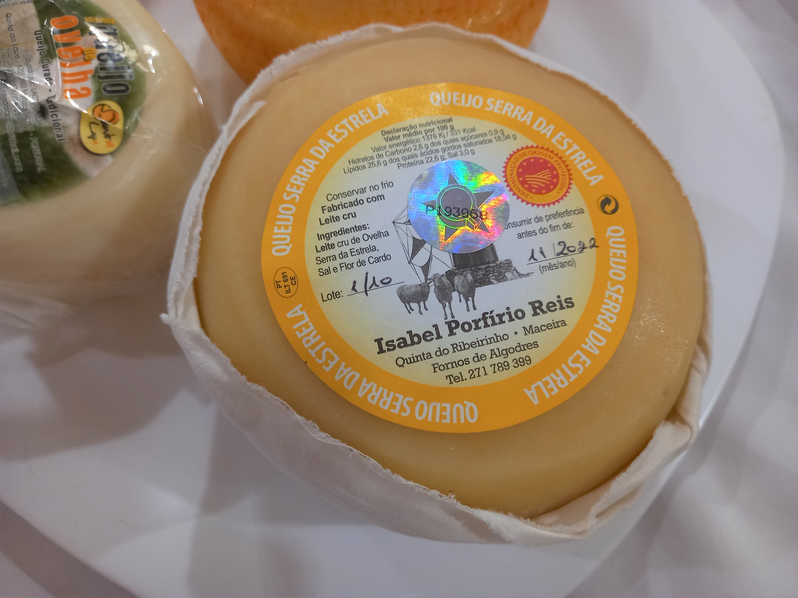
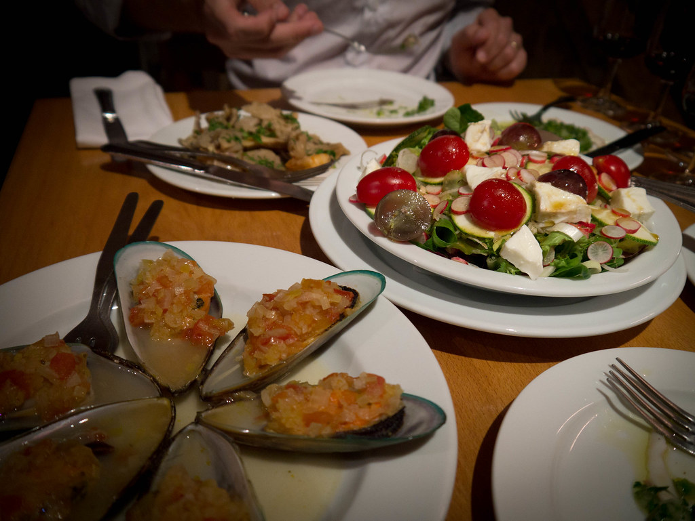

SPEZIALITÄTEN IN PORTUGAL
BACALHAU
Das portugiesische Nationalgericht schlechthin ist der Bacalhau, ein gesalzener und getrockneter Stockfisch. Für diesen gibt es unzählige Zubereitungsarten und in Portugal gibt es nicht umsonst das berühmte Sprichwort, dass es für jeden Tag des Jahres ein Bacalhau-Rezept gibt. Er wird gebraten, gekocht oder frittiert als "Bolinhos de Bacalhau" (kleine Fischbällchen) mit verschiedenen Beilagen serviert. Weitere Gerichte, welche sich auf fast jeder Speisekarte finden, sind "Bacalhau a Bras", bei dem der Bacalhau mit Kartoffeln, Eiern und Zwiebeln angerichtet wird, oder "Arroz de Bacalhau", bei dem es sich um Reis mit Stockfisch handelt.
FRANCECINHA
Eine Spezialität aus Porto ist die Francesinha (übersetzt: französisches Mädchen bzw. kleine Französin). Dabei handelt es sich um ein Toastbrot, eine Lage Fleisch, z.B. Rind oder Truthahn, Würstchen, Schinken, geschmolzenem Käse sowie der typischen Soße, die meist Tomaten, Bier und Senf enthält. Typischerweise wird die Francesinha mit Pommes Frites serviert. Es gibt auch vegetarische Variationen, die Pilze und Gemüse enthalten, oder aber wenn auf der Francesinha ein Spiegelei liegt.

CALDO VERDE
Fast obligatorisch beim Essen in einem Restaurant ist eine Suppe als erster Gang. Dabei gibt es sehr vielfältige Suppen und Eintöpfe. Eine sehr traditionelle Suppe ist dabei die Caldo Verde (übersetzt: grüne Brühe), welche aus Nordportugal stammt. Dabei handelt es sich um eine dünne Kartoffelcremesuppe mit fein geschnittenen Blättern des Markstammkohls und Schweinswürstchen. Dazu wird gerne das allseits beliebte Maisbrot gereicht.

SARDINHAS ASSADAS
Besonders typisch für die Küstenregionen um Lissabon und Setúbal sind die Sardinhas Assadas. Diese über Holzkohle gegrillten Sardinen, welche die Meeresfrische mit rauchigem Grillgeschmack verbinden, werden in Restaurants, aber auch an Straßenständen angeboten. Um den vollen Geschmack zu erleben, sollten die Sardinhas Assadas vor dem Verzehr ordentlich in Olivenöl getaucht werden. Als Beilage dienen Maisbrot, ein Salat aus gegrillten Paprika oder gekochtes Gemüse.
COZIDO A PORTUGUESA
Ein weiterer traditioneller Eintopf, vor allem für Fleischliebhaber, ist der Cozido a Portuguesa. Dabei werden geräucherte Schweinswürste, Rippchen, Schinken und Haxe mit Schweinefett sowie Kartoffeln und Gemüse (z.B. Möhren, Kohl oder Bohnen) zu einem schmackhaften Eintopf vereint. Das zum Kochen verwendete Wasser ist nach der Zubereitung des Cozido a Portuguesa eine reichhaltige Brühe, die entweder zum Kochen benutzt oder direkt getrunken werden kann.

QUEIJO
Obwohl Portugal ein Land mit einer langen Tradition der Käseherstellung ist, ist der Käse (genannt "Queijo") bei uns noch weitestgehend unbekannt. Der wohl bekannteste Käse in Portugal ist der Queijo da Serra, ein Schafskäse, dessen Konsistenz je nach Reifegrad in der Mitte fast noch flüssig, cremig-weich, bis hin zu schnittfest reichen kann und dessen Geschmack mild und leicht säuerlich ist. Auf den Azoren-Inseln werden verschiedene Käsesorten produziert. Da wären einerseits der Hartkäse Queijo da Ilha, den man am ehesten mit Parmesan vergleichen kann und die beiden Sorten Queijo do Pico und Queijo de São, die beide aus Kuhmilch hergestellt werden. In Portugal wird Käse vor oder nach dem Hauptgericht gegessen, also als Aperitif oder zum Dessert.

ARROZ DE MARISCO
Auch Arroz de Mariscos erfreut sich großer Beliebtheit. Dabei handelt es sich um ein Gericht, das vorwiegend aus Reis und Meeresfrüchten wie Garnelen und Muscheln, aber auch Teilen von größeren Tieren, wie z.B. Hummerscheren besteht, die zusammen in einem Topf gekocht werden. Das Gericht erhält durch die zerkleinerten Teile der Meerestiere die typische orange-rote Farbe. Das wichtigste Gewürz ist Koriander.

PETISCOS
Die Petiscos gehören zu den kleinen kulinarischen Spezialitäten, die Portugal zu bieten hat und zum Teil vielleicht am ehesten mit den spanischen Tapas zu vergleichen sind. Dazu zählen unter anderem frittierte Klößchen aus Bacalhau, Kartoffeln, Ei und Petersilie, welche Bolinhos de Bacalhau genannt werden. Auch Rissóis de Camarão, Teigtaschen mit Garnelenfüllung und Empanadas mit Füllungen von Krabben- oder Hackfleisch sind sehr zu empfehlen. Ausserdem gehören Käse und etwa Entenmuscheln zu den Petiscos, was so viel wie Vorspeise bedeutet.

SÜSSSPEISEN
Bei den Süßspeisen macht sich der Einfluss der Mauren bemerkbar, die jahrhundertelang die Iberische Halbinsel beherrschten. Die portugiesische Küche ist äusserst bekannt für ihre kalorienreichen Süßspeisen auf der Basis von Zucker und Eigelb. Während Schokolade nur eine untergeordnete Rolle spielt, erfreuen sich beispielsweise Arroz Doce (Milchreis), Pudim Caseiro (Eierpudding mit Karamellsoße) oder Ovos Moles, ein Gebäck mit Mandeln und Feigen, großer Beliebtheit.

PASTÉIS DE NATA
Eine spezielle Erwähnung in dieser Aufzählung portugiesischer Spezialitäten verdienen die Pastéis de Nata, das wohl populärste Süßgebäck Portugals, welches durch portugiesische Gastarbeiter in ganz Europa eine gewisse Bekanntheit erlangte. Diese in Blätterteig gebackenen Sahnepuddingtörtchen wurden schon im 18. Jahrhundert in einem Kloster in Belém, einem Stadtteil von Lissabon, hergestellt und das Rezept danach an eine Zuckerraffinerie verkauft. Meist werden die gebackenen Pastéis mit Zimt oder Puderzucker bestreut und gegessen.